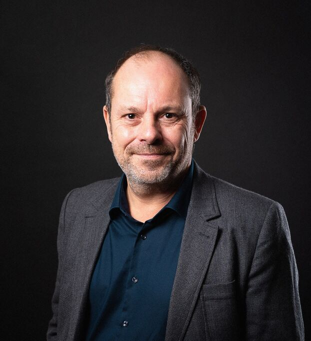

Ludovic Faytre
Responsable études “Risques - Aménagement” à l’Institut Paris Région, département environnement
Son apport pour notre enquête

Un entretien le 15 février 2024
Recommandé à la fois par Valérie November et Régis Thépot, Ludovic Faytre est une personne incontournable pour notre sujet. L’Institut Paris Région accompagne les territoires d’Île-de-France dans les réflexions relatives à l’aménagement du territoire : Ludovic Faytre est responsable de la prise en compte des risques dans les projets d’aménagement. L’entretien, qui a duré 2h30, nous a permis d’explorer en profondeur les différentes tensions autour de la prévention des risques et la nécessité de “composer” avec le risque, d’en faire “une composante de l’aménagement et non une contrainte”.
Thèmes abordés :